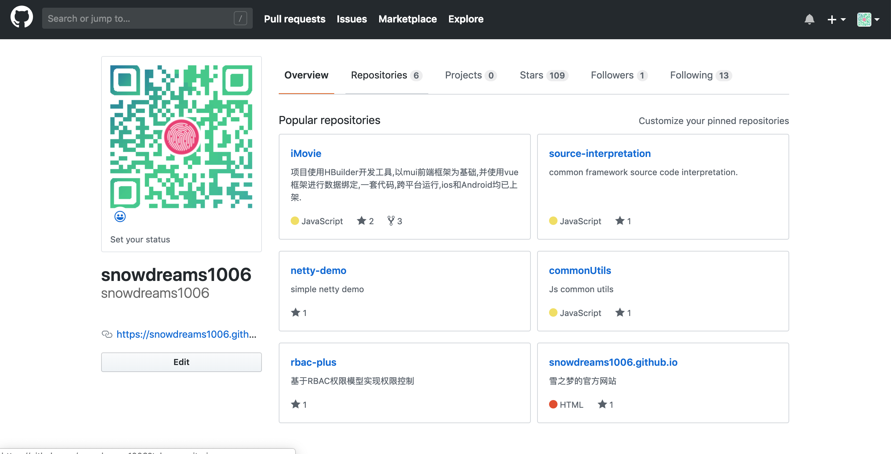

1. markdown 入门教程
markdown 不止是 HTML 的简化版,更重要的是 txt 的升级版,word 的轻量版,是笔记的最佳载体.
markdown 作为一种简单的格式标记语言,不同于 txt 的无格式,不同于 HTML 的复杂标记,也不同于 word 的鼠标调整样式.
markdown 通过简单的几个字符键入,就可以快捷的定义文档的样式.
掌握 markdown,你可以完全抛弃 txt 和笔记软件的编辑器,并且在大多数场景下替代掉复杂臃肿的 word.享受简洁之美、享受效率提升.
下面列举了 markdown 语法及对应的示例：
1.1. 标题
在标题文字前面加#,并且加上空格分割.
一个#是一级标题,两个#是两级标题,以此类推,最多支持六级标题.
示例:
# 标题1
## 标题2
### 标题3
#### 标题4
##### 标题5
###### 标题6
效果:
2. 标题1
2.1. 标题2
2.1.1. 标题3
标题4
标题5
标题6
2.2. 列表
包括有序列表和无序列表,支持列表嵌套.
2.2.1. 有序列表
有序列表就是有顺序的列表,依靠行前的数字加.标记顺序,序号和内容之间以空格 分开.
示例:
1. 有序列表1
2. 有序列表2
3. 有序列表3
效果:
- 有序列表1
- 有序列表2
- 有序列表3
2.2.2. 无序列表
无序列表就是列表不排序,支持- * + 3种前缀,可用于表示1级列表,2级列表,3级列表.
示例:
- 无序列表1
* 无序列表2
+ 无序列表3
效果:
- 无序列表1
- 无序列表2
- 无序列表3
2.2.3. 列表嵌套
上一级和下一级列表之间空两个空格 即可表示列表嵌套.
示例:
- 无序列表1
* 无序列表11
* 无序列表12
* 无序列表13
+ 无序列表131
+ 无序列表132
+ 无序列表133
- 无序列表2
- 无序列表3
效果:
- 无序列表1
- 无序列表11
- 无序列表12
- 无序列表13
- 无序列表131
- 无序列表132
- 无序列表133
- 无序列表2
- 无序列表3
2.3. 引用
在引用文字前加一个>即可,支持引用嵌套.
示例:
> 引用1
>> 引用11
>>> 引用111
效果:
引用1
引用11
引用111
2.4. 字体
2.4.1. 粗体
要加粗的文字左右两边分别用两个 * 号或者 _ 号包围起来
2.4.2. 斜体
要倾斜的文字左右两边分别用一个 * 号或者 _ 号包围起来
2.4.3. 粗体+斜体
要加粗并倾斜的文字左右两边分别用三个 * 号或者 _ 号包围起来
2.4.4. 删除线
要删除的文字左右两边分别用两个 ~ 号包围起来
示例:
**粗体1** __粗体2__
*斜体1* _斜体2_
***粗体+斜体1*** ___粗体+斜体2___
~~删除线~~
效果:
粗体1 粗体2
斜体1 斜体2
粗体+斜体1 粗体+斜体2
删除线
2.5. 分割线
三个或三个以上的- *即可表示分割线
示例:
---
***
效果:
2.6. 图片
其中,图片alt表示图片的解释文字,图片src是图片地址,支持本地路径和网络路径,图片title是图片的标题,可选.
示例:

效果:

2.7. 超链接
其中,超链接text表示超链接的解释文字,超链接url支持本地路径和网络路径,超链接title是超链接的标题,可选.
示例:
[https://snowdreams1006.github.io](https://snowdreams1006.github.io "snowdreams1006")
效果:
https://snowdreams1006.github.io
2.8. 表格
- 第一行定义表头,单元格内定义标题;
- 第二行定义样式,单元格内部至少一个
-,文字默认居左对齐,单元格内部-两侧均加:表示居中,只有右侧加:表示居右对齐; - 第三行定义数据;
示例:
|默认居左|文字居中|文字居右|
|-|:-:|-:|
|居左对齐1|居中对齐1|居右对齐1|
|居左对齐2|居中对齐2|居右对齐2|
|居左对齐3|居中对齐3|居右对齐3|
效果:
| 默认居左 | 文字居中 | 文字居右 |
|---|---|---|
| 居左对齐1 | 居中对齐1 | 居右对齐1 |
| 居左对齐2 | 居中对齐2 | 居右对齐2 |
| 居左对齐3 | 居中对齐3 | 居右对齐3 |
2.9. 代码
2.9.1. 单行代码
代码两侧分别用一个反引号包围起来
示例:
`code`
效果:
code
2.9.2. 多行代码
代码块首尾分别用三个反引号包围起来,且两边的反引号独占一行
示例:
(```)
function fun(){
echo "这是一句非常牛逼的代码";
}
fun();
(```)
注：为了防止转译,前后三个反引号处加了小括号,实际是没有的.
效果:
function fun(){
echo "这是一句非常牛逼的代码";
}
fun();
2.10. 注释
示例:
<!--注释-->
效果:
看不到注释就对了!
都学会了吗?
那考考你,你猜当前文档是如何书写的,看看你的答案和我实际书写规则是否一致呢!